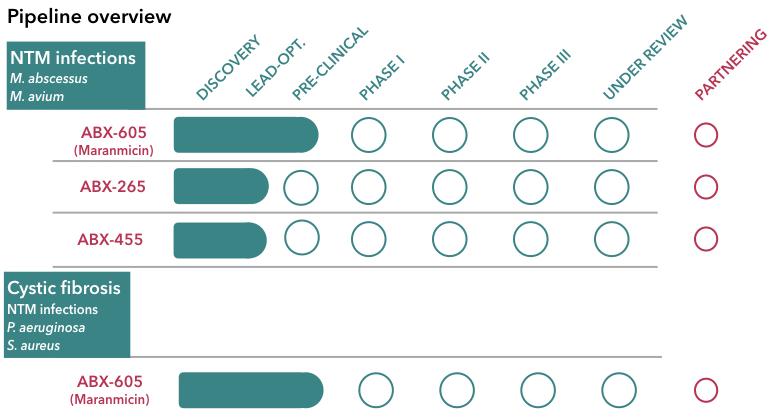
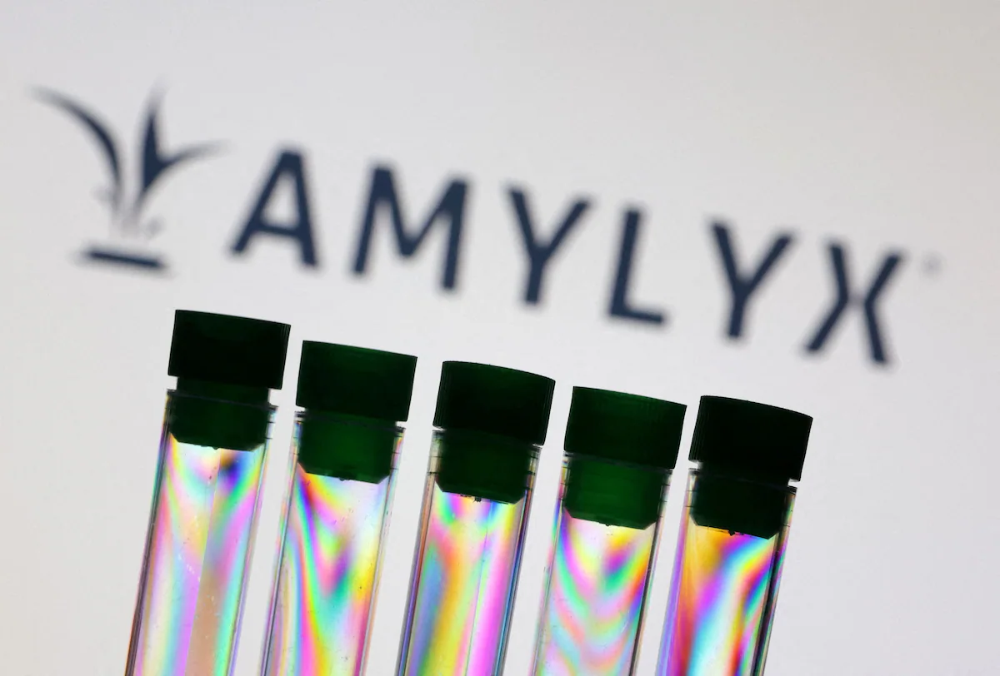
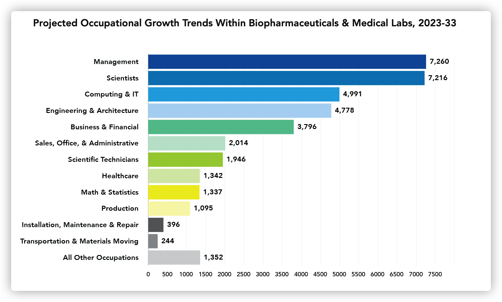

According to MassBioEd, 19% of degree holders work in biotech.
23% in healthcare.
14% in educational institutions.
44% of degree holders ended up working in non-life science industries, such as real estate, finance, and transportation.

The same stubborn mold kept reappearing in the cell incubator. No matter how diligently April Qian and her colleagues sanitized the lab, reset their experiments, and searched for the cause, it always found its way back.
“It was frustrating,” said Qian.

Along with other frustrating moments in the research process, April Qian—a Middlebury College graduate with degrees in Biochemistry and Molecular Biology—made the decision to not pursue the biotech industry, a field she had dreamed of joining since high school.
Repetitive day to day work, lack of immediate positive feedback in long term research, shifting interests, and the invisible weight of pressure were among the reasons for her departure. But Qian’s change of heart is far from rare.
Of the more than 200,000 life science degree holders in Massachusetts, four out of five choose not to pursue careers in the biotech industry according to the Massachusetts Biotechnology Education Foundation (MassBioEd) . Those who opt for other paths often cite the rigorous degree requirements, the desire for the mental satisfaction that comes from seeing quick and positive outcomes, and the concern of being laid off. Despite recent layoffs, however, the industry still projects a high demand for talent, with a projected 27% job growth for scientists in Massachusetts from 2023 to 2033, according to MassBioEd, to drive the research and development of new drugs and therapies.
Where did the four out of five degree holders who chose not to pursue biotech end up?
According to MassBioEd, 19% of degree holders work in biotech.
23% in healthcare.
14% in educational institutions.
44% of degree holders ended up working in non-life science industries, such as real estate, finance, and transportation.
Kuijun Wang, a student from China who graduated from college with a biostatistics degree, is one of those who switched to healthcare.
“I wanted to work for biotech or biopharmaceutical companies,” said Wang, yet says she was limited because of her lack of a PhD. That’s not the case for other life science industries. Wang has found work as a software engineer at Fathom, a healthcare company in California.
“I think for R&D (research and development) a PhD is seen as pretty mandatory these days,” said Julio Gagne, a vice president at Kite Pharma based in California. “A doctorate degree is especially important to break into leadership.”
MORE TEXT
Gagne believes the job losses may be a result of the industry's nature of “continuous failure.” Creating new stuff is always hard and that’s especially true in biotech. According to the Biotechnology Innovation Organization, overall success rates for a new drug to make it from Phase I testing to final FDA approval is only 9%.
The pipeline for a new drug, from discovery to post-marketing, usually takes a decade or more and costs millions of dollars. With all the investment of money and time, layoffs or even bankruptcy often occur if a drug fails, especially at small biotech companies.
For example, on April 4, Amylyx Pharmaceuticals, a biopharmaceutical company in Cambridge, failed a Phase III trial for a drug treating ALS, also known as Lou Gehrig’s disease. As a result, they pulled the ALS therapy off the market and are laying off about 70% of their staff.
MORE TEXT
An industry analysis from JLL reveals that venture capital investments in biotech nationwide totaled over $45 billion in 2021. This influx of funding spurred job growth, with life sciences employment in Massachusetts rising by 11.6% from 2021 to 2023, according to MassBioEd.

Although the biotech industry is facing challenges, the future demand for life science talents remains high, according to the MassBioEd.
MORE TEXT
MORE TEXT
Gagne was optimistic about the industry in the future. “Biotech is a recession-proof industry, said Gagne. “People get sick no matter how [is] the economy,.”
Produced by candidates for the MS degree in the Media Innovation & Data Communication program at the Northeastern University School of Journalism. © 2024